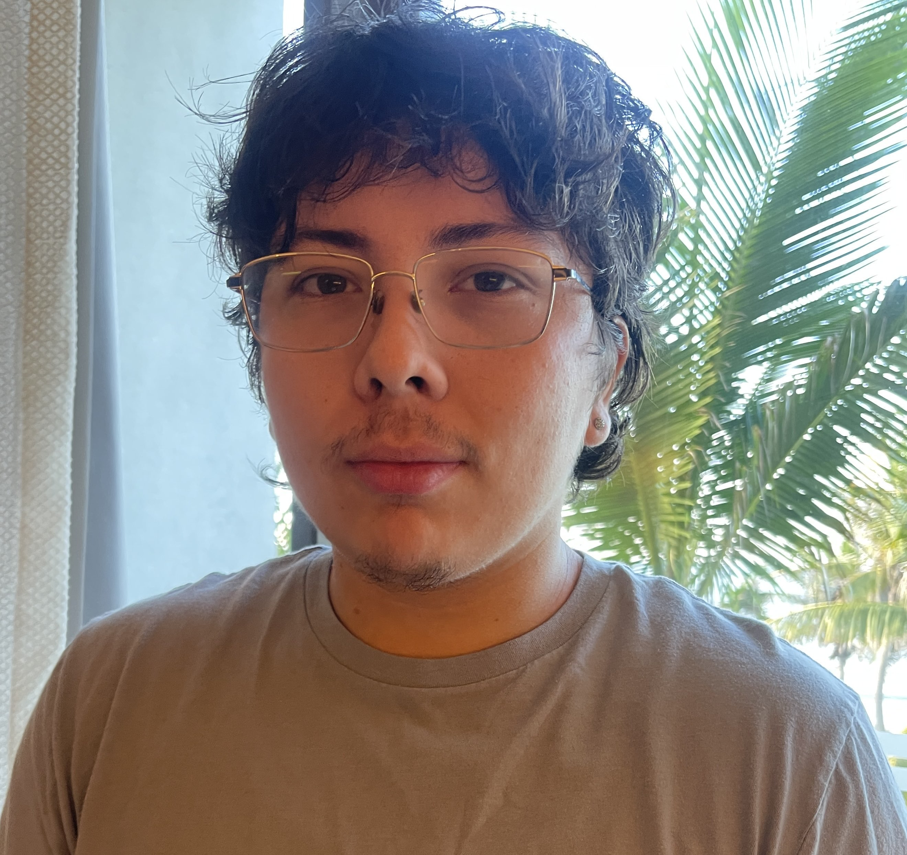
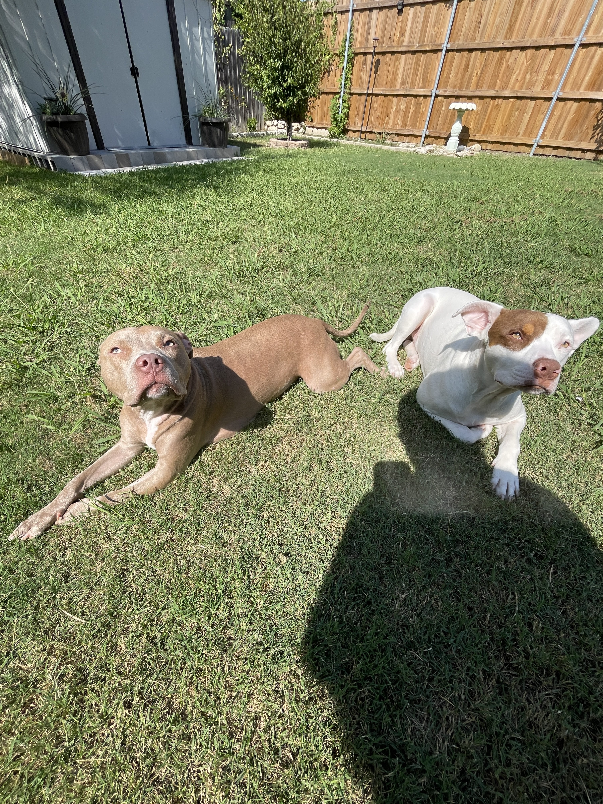

My name is Jared Benitez!
I am a junior at the University of Texas at Dallas ATEC program. I am originally from Los Angeles, California. I have lived in Dallas, Texas for most of my life. My main focus in ATEC is audio production and music recording/production. I have a few hobbies as of right now which include going to the gym, skateboarding, and playing guitar/bass. I have a deeeeeep love for music. My current favorite bands are Loathe, Title Fight, Citizen, Modern Color, and Alice In Chains. My favorite sports teams are the Dallas Cowboys, Newcastle, Guadalajara Chivas, LA Dodgers, LA Lakers, and Dallas Stars. I love all kinds of animals, but I feel I am more of a dog person. With that being said, I love cats and am dying to have one.

Above are my babies. The brown one on the left is named Camelia and the white one on the right is named Lucky. Camelia is a mix of pitbull and something else (We got her from the shelter so your guess is as good as mine) and Lucky is half pitbull half boxer. They are both absolute demons and can never seem to stop play fighting. Love them both to death.